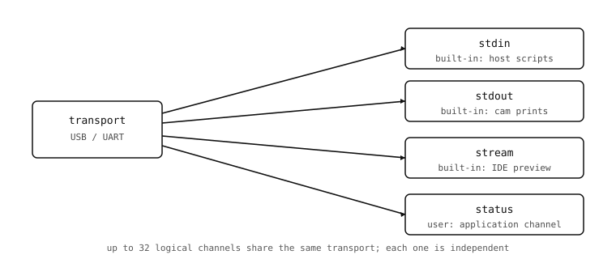

12.6. 명명된 채널¶
각 패킷 헤더의 채널 ID는 최대 32개의 독립적인 스트림이 동일한 물리적 전송 수단을 공유할 수 있게 합니다. 채널 계층은 그 숫자 ID들을 호스트 코드가 문자열로 참조할 수 있는, 명명된 애플리케이션 가시 엔드포인트로 변환합니다.

12.6.1. 네 개의 내장 채널¶
카메라는 어떤 애플리케이션 코드가 실행되기 전, 부팅 시 채널 네 개를 등록합니다:
stdin– 호스트가 카메라에 실행하도록 밀어 넣는 스크립트 바이트. IDE는 이 채널을 사용하여 편집 중인 스크립트를 보냅니다. 호스트 SDK의exec()는 Python 프로그램에서 이에 해당하는 호출입니다.stdout– 카메라의print()호출과 잡히지 않은 예외 트레이스백에서 나오는 바이트. IDE의 시리얼 콘솔이 이 채널을 읽습니다.stream– 실시간 미리보기 채널. IDE는 이로부터 JPEG 프레임을 가져옵니다. 어떤 호스트 스크립트든read_frame()으로 동일하게 할 수 있습니다.profile– 프로파일러 이벤트로, 카메라가 프로파일링을 활성화한 채 빌드된 경우에만 존재합니다. 대부분의 릴리스 빌드는 이를 생략합니다.
애플리케이션 코드가 내장 채널을 다룰 일은 거의 없습니다. 흥미로운 작업은 애플리케이션이 스스로 등록한 채널에서 일어납니다.
12.6.2. 채널 등록하기¶
카메라 측 스크립트는 이름과 Python backend 객체를 인수로 protocol.register() 를 호출하여 새 채널을 등록합니다:
import json
import protocol
import time
trigger_count = 0
class StatusChannel:
def size(self):
# Refresh the snapshot on every host query.
self._buf = json.dumps({
'uptime_s': time.ticks_ms() // 1000,
'triggers': trigger_count,
}).encode()
return len(self._buf)
def read(self, offset, size):
return self._buf[offset:offset + size]
protocol.register(name='status', backend=StatusChannel())
백엔드 객체의 메서드가 채널이 무엇을 할 수 있는지 결정합니다. size 와 read 만 있는 백엔드는 읽기 전용 데이터 채널 입니다. write 를 추가하면 양방향이 되고, poll 을 추가하면 호스트가 읽기 비용을 치르기 전에 새 데이터가 준비되었는지 물어볼 수 있습니다. size 안에서 데이터를 샘플링하는 것은 페이로드가 한 조각에 들어갈 만큼 작을 때 가장 단순한 패턴입니다. 버퍼는 요청 시 생성되며, 캐시되지 않고, 경합도 없습니다. 이미지 프레임이나 센서 트레이스처럼 더 큰 페이로드는 호스트가 다중 조각 읽기를 마칠 때까지 버퍼를 유지하는 래칭 패턴이 필요하며, 이는 프레임 채널에서 다룹니다.
약간의 부수적인 관리 작업이 자동으로 일어납니다:
라이브러리는 다음으로 비어 있는 채널 ID(0에서 31 사이)를 할당합니다.
기능 플래그는 존재하는 메서드로부터 도출됩니다:
read가 정의되어 있으면CHANNEL_FLAG_READ,write가 정의되어 있으면CHANNEL_FLAG_WRITE,lock/unlock이 정의되어 있으면CHANNEL_FLAG_LOCK입니다.연결된 모든 호스트에
CHANNEL_REGISTERED이벤트 패킷이 전송되어 호스트의 채널 목록이 갱신됩니다.
반환값은 애플리케이션이 보관할 수 있는 protocol.ProtocolChannel 핸들입니다. 이 핸들의 send_event() 메서드는 카메라 측에서 호스트에게 “읽을 수 있는 데이터를 바꾸지 않고 이 채널에서 무언가 일어났다”고 알리는 훅입니다 – 트리거가 발생했거나, 버튼이 눌렸거나, 샘플 수 이정표를 지났을 때 등입니다.
12.6.3. 호스트에서 채널 읽기¶
호스트 SDK는 PyPI에서 openmv 패키지로 제공되며(pip install openmv), 전송에는 pyserial 을 기반으로 합니다. 그 openmv.camera.Camera 클래스는 카메라의 명명된 채널을 고수준 메서드를 통해 노출합니다:
from openmv.camera import Camera
with Camera('/dev/ttyACM0', baudrate=921600) as cam:
cam.update_channels()
if cam.has_channel('status'):
size = cam.channel_size('status')
data = cam.channel_read('status', size)
경고
openmv 패키지는 CPython 3.12 이상 을 필요로 합니다. 더 이전 인터프리터에는 SDK가 의존하는 기능이 없습니다. pip install openmv 전에 3.12 이상 빌드를 설치하십시오.
설정에 관해 주목할 몇 가지:
시리얼 포트 문자열은 – 여기서는
/dev/ttyACM0– Windows에서는COM3형태, macOS에서는/dev/cu.usbmodemXXXX, Linux에서는/dev/ttyACM*입니다. 실제 번호는 카메라가 어떤 포트로 열거되었는지에 따라 달라집니다.보드 레이트는 프로토콜의 매직 값
921600으로, 카메라의 USB-CDC 스택은 이를 “이 클라이언트는 REPL이 아니라 프로토콜을 사용한다”는 의미로 인식합니다. 다른 모든 속도는 일반 시리얼 라인으로 폴백됩니다.with Camera(...) as cam:컨텍스트 관리자는 전송을 열고,PROTO_SYNC를 실행하고, 기능을 교환하며, 종료 시 포트를 깔끔하게 닫습니다. 진입 후 명시적으로 호출하는update_channels()는 부팅 이후 애플리케이션이 등록한 채널을 반영하여 로컬 채널 목록을 새로 고칩니다.
channel_size() 와 channel_read() 는 핵심 메서드입니다. channel_write() 는 백엔드에 write 메서드가 있으면 버퍼를 카메라로 왕복 전송합니다. has_channel() 은 이름을 사용하기 전에 그것이 등록되어 있는지 안전하게 확인하는 방법입니다. 채널 이름은 카메라가 register 중에 할당한 채널 ID로 한 번 조회되어, 그 이후의 모든 패킷에서 사용됩니다.
각 channel_size() / channel_read() 쌍은 두 번의 왕복 비용이 듭니다: 크기를 묻는 패킷 하나, 바이트를 묻는 패킷 하나입니다. USB-CDC에서는 둘이 합쳐 약 1밀리초 안에 끝나지만, UART에서는 동일한 교환이 시리얼 라인의 보드 레이트에 비례하여 더 오래 걸립니다. 빡빡한 루프에서 읽는 애플리케이션 코드는 크기가 실제로 바뀔 수 있을 때만 channel_size() 를 호출해야 합니다 – 고정 크기 데이터의 경우 첫 호출에서 얻은 크기를 캐시할 수 있습니다.
12.6.4. 채널 간 독립성¶
채널이 상호작용하는 방식에 관해 알아 둘 가치가 있는 세 가지가 있습니다:
독립적인 흐름 제어. 각 채널은 자체의 대기 중 읽기 상태, 자체 데이터, 그리고 자체
size/read/write콜백을 가집니다.stream채널에서 오래 걸리는 읽기가 애플리케이션의config채널 읽기를 막지 않습니다.채널별 순차성. 단일 채널 내에서 패킷은 순서대로 전달됩니다. 신뢰성 계층은 재전송이 관련되더라도 이를 보장합니다.
공유 전송, 공유 재전송 예산. 모든 채널은 하나의 물리적 링크를 공유하므로, 한 채널의 폭주하는 트래픽은 와이어를 독차지하여 다른 채널을 느리게 만듭니다.
CHANNEL_LOCK메커니즘은 한 채널이 원자적 다중 패킷 읽기를 위해 와이어를 예약하게 해 줍니다. 백엔드는lock/unlock콜백을 구현하여 이를 선택적으로 사용합니다.
채널은 호스트 프로그램과 카메라 프로그램이 협력하기로 합의하는 최소한의 접점입니다. 이름, 방향성(읽기 또는 쓰기 또는 둘 다), 카메라 측의 콜백 메서드, 그리고 호스트 측의 대응하는 메서드 호출이 계약의 전부입니다.